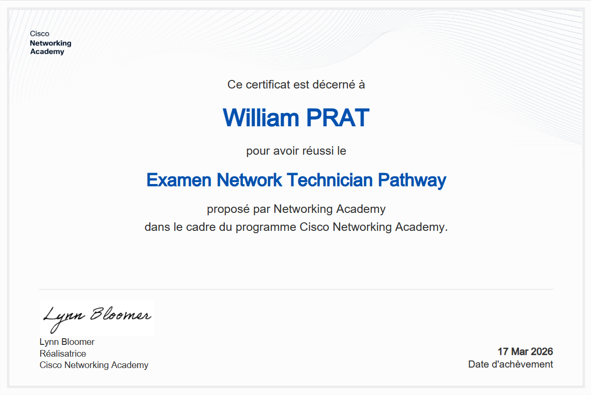
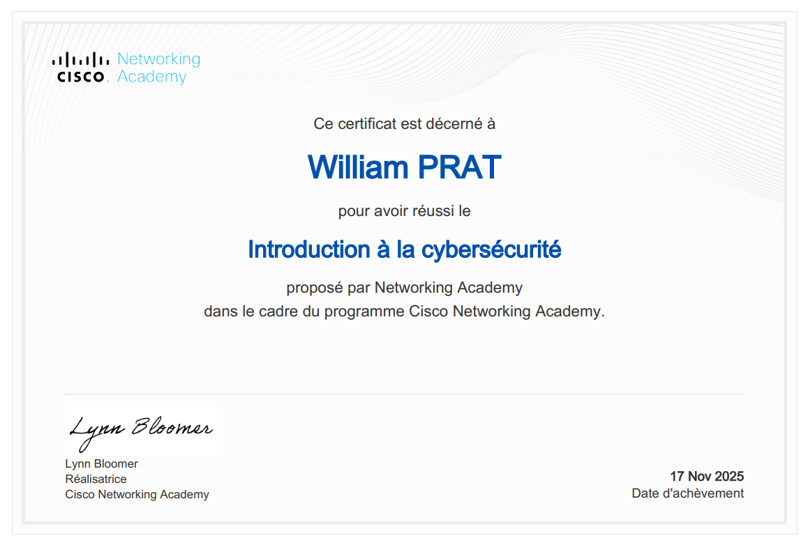
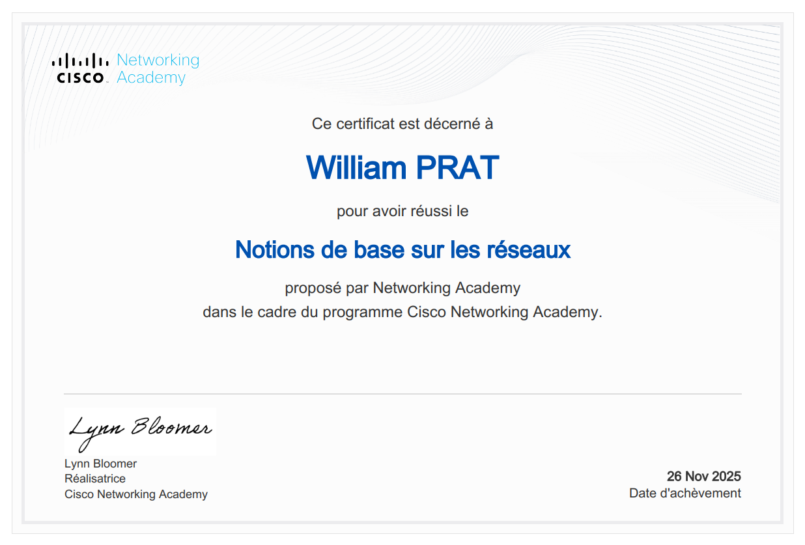
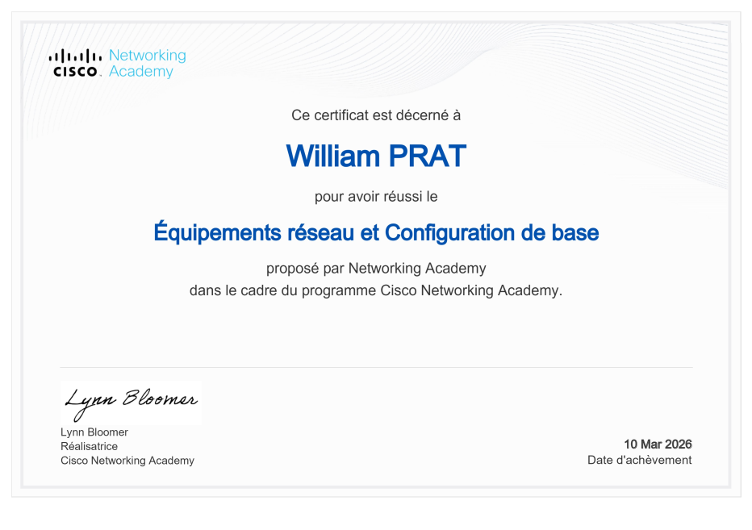
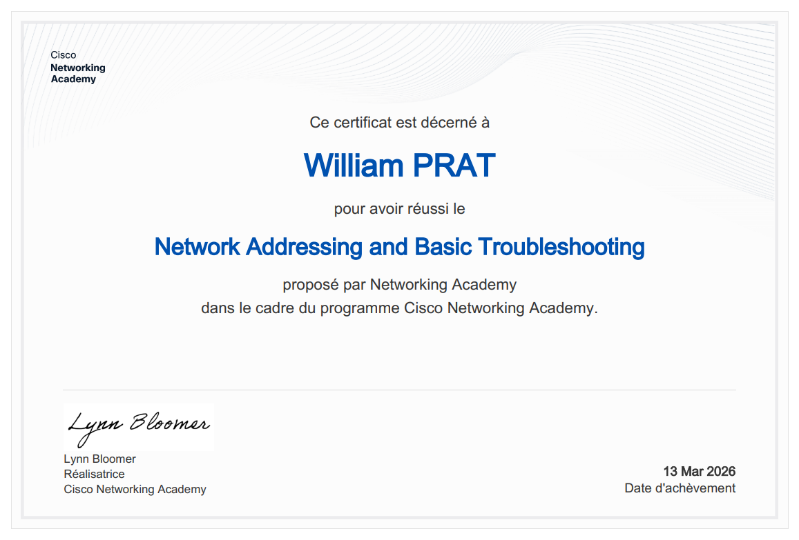
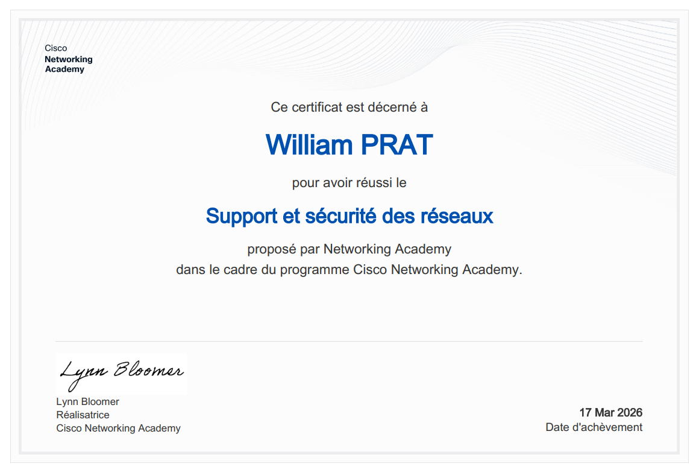
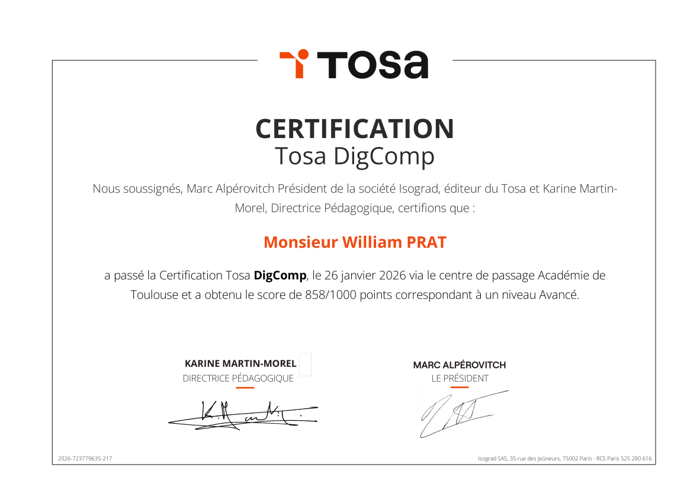

Technicien Supérieur Systèmes & Réseaux
Infrastructure IT • Sécurité réseau • Administration systèmes
Passionné par le secteur de l'informatique et le réseau, je souhaite consolider mes compétences par une expérience professionnelle ou via un cursus en alternance, ainsi que par l'obtention de certifications, être pleinement opérationnel afin de concrétiser mon projet de reconversion.
J'ai exercé dans plusieurs types de structures, je suis polyvalent et sais faire preuve d'adaptabilité. J'aime le travail collaboratif, j'ai le sens du travail en équipe et suis participatif. Mon parcours m'a également apporté une certaine ténacité et détermination. Je serai ravi d'échanger avec vous sur les opportunités d'emploi ou d'alternance que vous pourriez avoir à me proposer, n'hésitez pas à me contacter.
Assurer le support utilisateur en centre de service
Exploiter des serveurs Windows et Active Directory
Exploiter et maintenir des serveurs Linux
Exploiter un réseau IP et gérer les interconnexions
Infrastructure virtualisée et gestion des ressources
Scripts & automatisation des tâches
Sécuriser les accès à internet et les interconnexions
Mettre en place, assurer et tester les sauvegardes
Exploiter et maintenir les services de déploiement des postes
Reconnaissances professionnelles de mes compétences

Examen Network Technician

Fondamentaux de la cybersécurité

Principes essentiels des réseaux

Configuration basique des équipements Switch, Router

Adressage réseau et dépannage

Centre de service et introduction aux Firewalls

Certification de compétences bureautiques
Découvrez mes travaux pratiques et projets de formation
Vous cherchez un technicien compétent et motivé ? N'hésitez pas à me contacter.